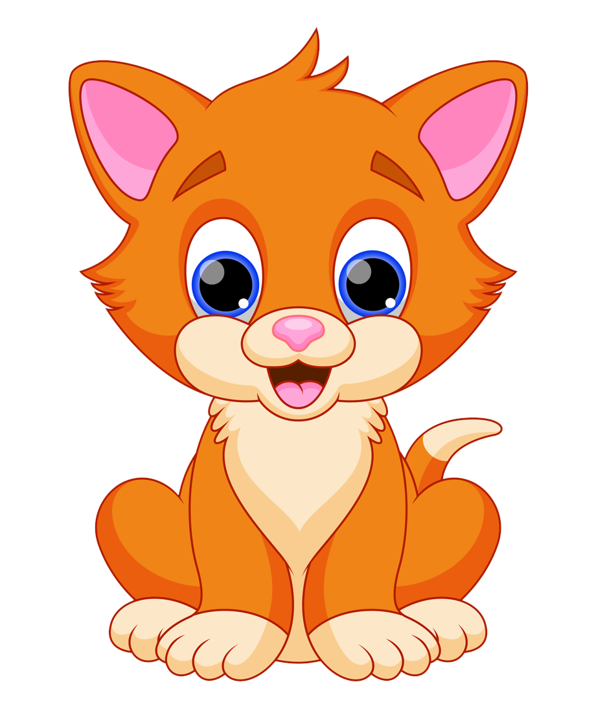

<ion-app> 
  <ion-content fullscreen padding scroll-y="false">
    <ion-slides pager="true" [options]="slideOpts">
      <ion-slide>
        
        <h2>Welcome to the <b>ICA</b></h2>
        <label><p>The <b>ionic conference app</b> is a practical preview of the ionic framework in action, and a demonstration of proper code use.</p></label>
      </ion-slide>

      <ion-slide>
        
        <h2>What is Ionic?</h2>
        <label><p>The <b>ionic conference app</b> is a practical preview of the ionic framework in action, and a demonstration of proper code use.</p></label>
      </ion-slide>

      <ion-slide>
        
        <h2>Ready to Play?</h2>
        <ion-button color="warning" (click)="continue();" style="width: 250px;">Başla</ion-button>
      </ion-slide>
    </ion-slides>
  </ion-content>
</ion-app>
